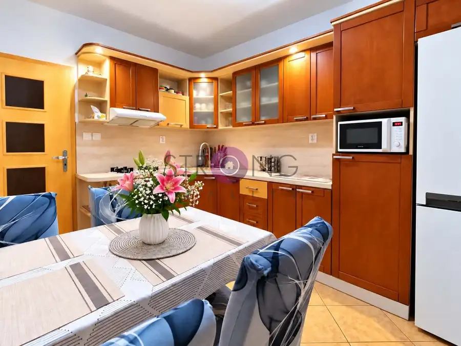
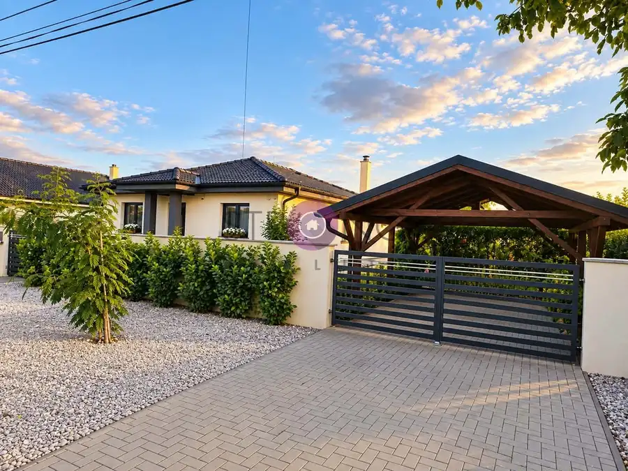

Svetlý veľkometrážny trojizbový byt s balkónom a šatníkom
Dunajská Streda
- Dispozícia3-izbový
- Plocha81 m²
- Poschodie7. z 7
- StavČiastočná rekonštrukcia
- Energetická triedaB
O nehnuteľnosti
STRONG REALITY – z poverenia majiteľa nehnuteľnosti exkluzívne ponúka na predaj priestranný a svetlý veľkometrážny 3-izbový byt s balkónom v obľúbenej lokalite Nová Ves – Východ.Byt sa nachádza na najvyššom poschodí zatepleného bytového domu s výťahom, postaveného v roku 1998. Celková výmera bytu je 81,12 m². K bytu patrí pivnica s výmerou 2,5 m² a obyvatelia domu majú k dispozícii aj spoločnú miestnosť pre bicykle s rozlohou približne 20 m².Byt prešiel čiastočnou rekonštrukciou – bezpečnostné vchodové dvere, podlahy, parkety, kúpeľňa, interiérové dvere a plastové okná s vnútornými aj vonkajšími žalúziami. Dispozícia ponúka dve veľké spálne, priestrannú obývaciu izbu, samostatný šatník s policami, kuchyňu s drevenou kuchynskou linkou, plynovou rúrou, digestorom a praktickou špajzou.Z jednej zo spální je výstup na slnečný balkón. Kúpeľňa je vybavená vaňou a umývadlom, WC je samostatné. Veľkou výhodou je priestranná chodba s krásnou vstavanou skriňou a dostatkom úložného priestoru.Byt je tichý, slnečný a nachádza sa vo výbornej lokalite s kompletnou občianskou vybavenosťou. V pešej dostupnosti sa nachádzajú obchodné centrá Tesco a MAX, McDonald’s, školy, materské školy, lekáreň, zdravotné stredisko, zastávky MHD, detské ihriská, športoviská a množstvo ďalších služieb.Nízke mesačné náklady: cca 160 ,- Eur (zahŕňa elektrinu, kúrenie, studenú a teplú vodu a spoločné náklady)Ideálna voľba pre rodinu alebo pre každého, kto hľadá komfortné bývanie v pokojnej a vyhľadávanej časti mesta.Cena a bližšie informácie:Cena tejto nehnuteľnosti je 139 990,- EurCena je vrátane provízie RK a zahŕňa aj prípravu Kúpnej zmluvy (alebo obdobnej zmluvy).V prípade akýchkoľvek otázok Vám ochotne pomôžem v slovenskom/maďarskom jazyku.KONTAKT: 0907 226 093 Marta Horváthová alebo email: horvathova@strongreality.skTúto nehnuteľnosť nájdete iba v ponuke našej kancelárie, ktorá realizuje celý kúpno-predajný proces, vrátane financovania, a to hlavne korektným a férovým prístupom ku klientom.Všetky naše ponuky nájdete na www.strongreality.skFotografie a text sú autorským dielom spoločnosti STRONG REALITY s.r.o.
Parametre
| Cena vrátane energií | Nie |
|---|---|
| Druh | 3 izbový byt |
| Dátum zverejnenia | 2. 7. 2026 |
| Energetický certifikát budovy | B |
| Podlažie | 7 |
| Počet nadzemných podlaží | 7 |
| Rok výstavby | 1998 |
| Stav nehnuteľnosti | Čiastočná rekonštrukcia |
| Typ | Predaj |
| Typ konštrukcie | Bloková konštrukcia |
| Úžitková plocha | 81 m² |
Kde to je


Mohlo by Vás zaujímať

BytNové10 130 000 €Veľkometrážny 3-izbový byt s loggiou – Dunajská Streda Dunajská Streda 3-izbový76 m²5. podlažie STRONG REALITY – z poverenia majiteľa nehnuteľnosti exkluzívne ponúka na predaj priestranný a svetlý veľkometrážny 3-izbový byt s loggiou vo…
DomNové10 238 000 €Kompletne zariadený 4-izbový rodinný dom v obci Vrakúň Vrakúň 112 m² STRONG REALITY – z poverenia majiteľa nehnuteľnosti exkluzívne ponúka na predaj samostatne stojaci 4-izbový rodinný dom v obci Vrakúň, situovaný v…